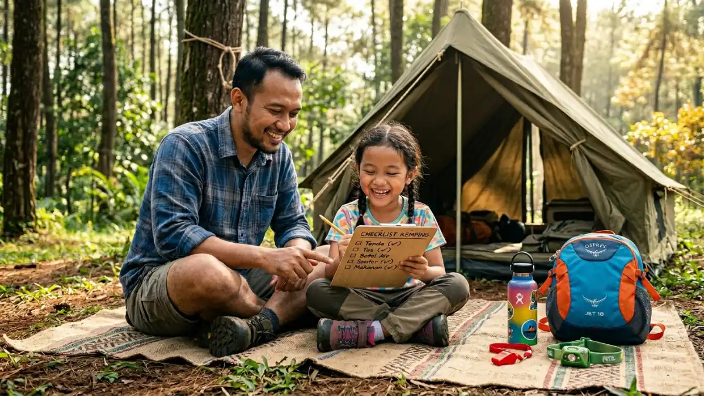

Glamping merupakan pilihan tepat bagi keluarga yang ingin pengalaman camping dengan fasilitas lengkap.
Glamping merupakan pilihan tepat bagi keluarga yang ingin pengalaman camping dengan fasilitas lengkap.
Camping glamping keluarga adalah cara menikmati pengalaman alam terbuka bersama seluruh anggota keluarga dengan fasilitas yang lebih nyaman dari camping biasa, cocok untuk anak-anak dari segala usia, dan tersedia di ratusan lokasi wisata alam di seluruh Indonesia.
Apa Perbedaan Camping Biasa dan Glamping untuk Keluarga?
Camping biasa dan glamping sama-sama menawarkan pengalaman bermalam di alam terbuka, namun keduanya memiliki perbedaan signifikan dalam hal kenyamanan, persiapan, dan biaya. Memahami perbedaan ini membantu keluarga memilih opsi yang paling sesuai.
Camping biasa mengharuskan peserta membawa dan menyiapkan sendiri semua perlengkapan, mulai dari tenda, sleeping bag, hingga peralatan memasak.
Tidur di sleeping bag di atas matras, memasak sendiri di atas kompor portable, dan menggunakan fasilitas toilet umum yang tersedia di lokasi adalah bagian dari pengalamannya.
Glamping (gabungan kata glamorous dan camping) menyediakan semua perlengkapan dan fasilitas, sehingga pengunjung hanya perlu datang dengan barang bawaan pribadi seperti pakaian dan perlengkapan mandi.
Tenda sudah terpasang, dilengkapi kasur dan bantal yang nyaman, dan umumnya memiliki akses listrik serta toilet yang lebih baik dari camping biasa.
Untuk keluarga dengan anak di bawah 7 tahun, glamping adalah pilihan yang jauh lebih praktis karena tidak memerlukan persiapan teknis dan meminimalkan potensi ketidaknyamanan yang bisa membuat anak rewel.
Untuk keluarga dengan anak yang lebih besar, camping biasa bisa menjadi pengalaman edukatif yang sangat berharga.
Di Mana Lokasi Glamping Keluarga Terbaik di Indonesia?
Industri glamping di Indonesia mengalami pertumbuhan yang pesat dalam beberapa tahun terakhir. Berdasarkan tren wisata alam 2024-2025, penyedia glamping keluarga terbanyak terkonsentrasi di Jawa Barat, Jawa Tengah, dan Bali.
Glamping di Jawa Barat
Jawa Barat adalah provinsi dengan konsentrasi lokasi glamping keluarga terbanyak di Indonesia, didukung oleh aksesibilitas dari Jakarta dan Bandung serta iklim sejuk di kawasan Puncak dan Lembang.
Karakteristik glamping di Jawa Barat: umumnya menawarkan pemandangan gunung atau perkebunan teh, udara sejuk sepanjang hari dan dingin di malam hari, dan berbagai pilihan fasilitas dari yang sederhana hingga mewah.
Area Lembang, Bandung Barat menjadi salah satu zona glamping keluarga paling populer dengan berbagai pilihan yang tersebar di sepanjang jalur menuju Gunung Tangkuban Perahu.
Area Puncak, Bogor juga menawarkan banyak pilihan glamping dengan latar perkebunan teh yang khas.
Glamping di Jawa Tengah dan Yogyakarta
Kawasan Kaliurang di Sleman, Gunung Merapi, dan Dieng di Wonosobo menjadi pilihan glamping populer di wilayah Jawa Tengah dan DIY. Keunikan kawasan ini adalah kedekatan dengan situs budaya dan sejarah yang bisa menjadi destinasi wisata siang hari setelah bermalam.
Glamping di Bali
Bali menyediakan glamping dengan konsep yang berbeda dibandingkan dengan Jawa, mengintegrasikan pengalaman alam dengan nuansa budaya Bali yang unik.
Area Kintamani di tepi Danau Batur dan kawasan Ubud dengan latar persawahan terasa menjadi pilihan glamping keluarga yang populer di Bali.
Apa Tips Aman Membawa Anak Camping atau Glamping?
Membawa anak-anak camping atau glamping membutuhkan perencanaan tambahan yang berbeda dari camping biasa untuk orang dewasa. Keselamatan dan kenyamanan anak harus menjadi prioritas utama dalam setiap keputusan.
Pilih Lokasi yang Sesuai Usia Anak
Untuk bayi dan balita (0-3 tahun): glamping dengan fasilitas lengkap termasuk kasur nyaman, akses toilet yang baik, dan perlindungan dari nyamuk adalah pilihan yang tepat. Hindari lokasi yang berada di ketinggian sangat tinggi atau memerlukan perjalanan panjang.
Untuk anak usia 4-10 tahun: bisa mulai mencoba camping biasa di lokasi yang mudah diakses, datar, dan memiliki pengelola aktif.
Anak usia ini sudah bisa menikmati aktivitas alam seperti berjalan santai, mengamati serangga, dan membantu mendirikan tenda.
Untuk anak di atas 10 tahun: bisa mulai mencoba pendakian gunung yang ramah pemula atau camping di lokasi yang sedikit lebih menantang, tetap dengan pengawasan dan persiapan yang sesuai.

Berikan pengalaman alam yang edukatif dan aman bagi anak saat camping bersama.Perlengkapan Tambahan untuk Camping dengan Anak
Selain perlengkapan camping standar, tambahkan perlengkapan khusus anak:
- Losion anti-nyamuk yang aman untuk kulit anak
- Pakaian lengan panjang untuk perlindungan dari serangga
- Sleeping bag ukuran anak dengan rating suhu yang sesuai
- Obat-obatan anak termasuk antipiretik, antihistamin, dan obat diare
- Makanan dan minuman favorit anak sebagai cadangan jika anak tidak mau makan menu camping
- Mainan atau buku untuk mengisi waktu
Keselamatan Anak di Area Camping
Tetapkan aturan sederhana yang mudah dipahami anak sebelum tiba di lokasi: tidak boleh meninggalkan area camping tanpa izin orang tua, tidak mendekati api tanpa pengawasan dewasa, tidak menyentuh atau memakan tanaman dan jamur liar, dan selalu memberitahu orang tua jika ingin ke toilet.
Kenakan pakaian berwarna cerah pada anak agar mudah terlihat di area camping yang luas. Untuk anak yang sangat aktif, pertimbangkan menggunakan gelang identitas dengan nomor kontak orang tua.
Apa Aktivitas Seru yang Bisa Dilakukan Keluarga Saat Camping?
Camping keluarga yang berkesan tidak hanya tentang bermalam di alam, tetapi juga tentang aktivitas bersama yang memperkuat ikatan keluarga dan memberikan pengalaman belajar yang unik bagi anak-anak.
Aktivitas camping yang disukai anak-anak:
- Api unggun dan memanggang marshmallow: Aktivitas klasik yang hampir selalu disukai semua usia. Pastikan api selalu dalam pengawasan orang dewasa.
- Pengamatan bintang: Langit malam yang bebas polusi cahaya di area camping adalah kesempatan langka untuk menunjukkan konstelasi kepada anak. Unduh aplikasi peta bintang offline sebelum berangkat.
- Permainan alam: Membuat rumah-rumahan dari ranting, mengumpulkan daun dengan berbagai bentuk, atau mengamati serangga dan burung dengan buku panduan sederhana.
- Memasak bersama: Libatkan anak dalam proses memasak di alam, mulai dari mencuci bahan makanan hingga mengaduk masakan. Ini mengajarkan kemandirian dan rasa tanggung jawab.
- Fotografi alam: Untuk anak yang lebih besar, beri mereka kamera sederhana untuk mendokumentasikan perjalanan. Ini mengembangkan kreativitas dan kepekaan terhadap keindahan alam.
Berapa Biaya Glamping Keluarga di Indonesia?
Biaya glamping keluarga di Indonesia sangat bervariasi tergantung lokasi, fasilitas yang ditawarkan, dan musim kunjungan. Berdasarkan tren harga glamping 2024-2025, berikut gambaran kisaran biaya yang umum berlaku.
Glamping dasar (tenda glamping dengan kasur dan listrik): Rp300.000 - Rp600.000 per malam per unit tenda. Cocok untuk 2-3 orang dengan fasilitas toilet bersama.
Glamping menengah (tenda dome atau kabin kayu dengan fasilitas lengkap): Rp600.000 - Rp1.200.000 per malam per unit. Umumnya sudah termasuk sarapan dan toilet pribadi.
Glamping premium (tenda mewah atau pod dengan desain unik): Rp1.200.000 - Rp3.000.000 per malam per unit. Fasilitas setara penginapan berbintang dengan suasana alam.
Biaya yang tertera di atas bersifat perkiraan dan dapat bervariasi. Selalu cek harga terkini langsung ke pengelola atau platform pemesanan wisata sebelum merencanakan perjalanan, terutama untuk periode musim liburan sekolah dan akhir tahun ketika harga cenderung meningkat.
Camping dan glamping keluarga adalah cara yang luar biasa untuk memperkenalkan anak-anak pada alam dan mengajarkan nilai-nilai kemandirian, ketangguhan, dan kepedulian lingkungan.
Mulailah dengan glamping jika ini adalah pertama kalinya keluarga mencoba bermalam di alam, lalu tingkatkan ke camping biasa seiring bertambahnya pengalaman dan kepercayaan diri anak-anak.
Hal terpenting adalah memilih lokasi yang sesuai usia dan kebutuhan seluruh anggota keluarga, mempersiapkan perlengkapan dengan teliti, dan menjaga suasana positif sepanjang perjalanan agar pengalaman camping pertama menjadi kenangan yang menyenangkan bagi anak.
FAQ
1. Berapa usia minimal anak untuk diajak camping?
Tidak ada usia minimal yang baku, namun bayi dan anak di bawah 2 tahun membutuhkan perhatian ekstra dalam kondisi alam terbuka. Untuk anak di bawah 2 tahun, pilih glamping dengan fasilitas sangat lengkap, cuaca yang stabil, dan lokasi yang mudah dijangkau kendaraan. Anak usia 4 tahun ke atas umumnya sudah lebih adaptif dan bisa menikmati pengalaman camping dengan baik.
2. Apakah glamping lebih aman dari camping biasa untuk keluarga?
Glamping umumnya lebih aman untuk keluarga dengan anak kecil karena perlengkapannya sudah disiapkan secara profesional, fasilitas lebih terjaga, dan biasanya ada staf pengelola yang siap membantu. Namun keamanan tetap bergantung pada kualitas pengelola dan kepatuhan keluarga terhadap aturan keselamatan di lokasi. Selalu riset ulasan dan reputasi pengelola sebelum memesan.
3. Bagaimana cara mengatasi anak yang takut gelap atau tidak mau tidur saat camping?
Bawa lampu tidur portable bertenaga baterai untuk pencahayaan dalam tenda, yang juga memberikan rasa aman pada anak. Buatlah ritual tidur yang mirip dengan rutinitas di rumah, seperti membacakan cerita sebelum tidur. Ajak anak berdiskusi tentang pengalaman seru yang akan dilakukan keesokan harinya agar mereka semangat dan lebih mudah tidur. Camping pertama yang menyenangkan biasanya membuat anak justru ketagihan untuk camping lagi.